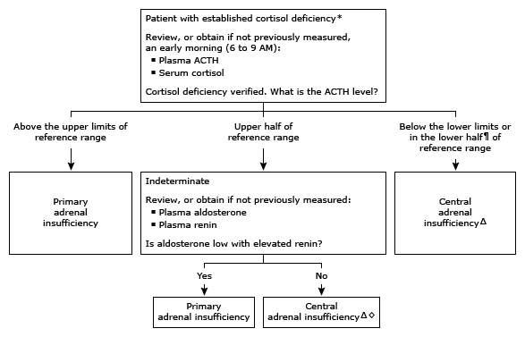

ACTH: corticotropin; CRH: corticotropin-releasing hormone.
* Refer to UpToDate content for basal and stimulated serum cortisol thresholds that identify cortisol deficiency.
¶ Although the ACTH concentration may not be overtly low in central adrenal insufficiency, it is usually in the lower half of the reference range and inappropriately low in the setting of cortisol deficiency.
Δ The distinction between secondary (interference with ACTH secretion) and tertiary (interference with CRH secretion) adrenal insufficiency is usually made on a clinical basis alone, although this distinction is seldom important from a therapeutic standpoint.
◊ Plasma levels of renin and aldosterone are usually unaffected in central adrenal insufficiency. If clinical history suggests cortisol deficiency only under physiologic stress, partial central adrenal insufficiency is possible (eg, due to pituitary surgery, opioid use). With partial central adrenal insufficiency, ACTH production is adequate for cortisol secretion in unstressed conditions but fails to increase appropriately during physiologic stress. Under unstressed conditions, the serum cortisol value may not be overtly low and the plasma ACTH level is often indeterminate.